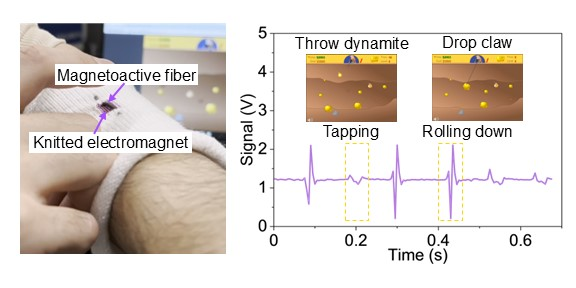
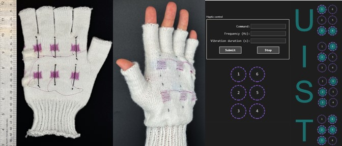
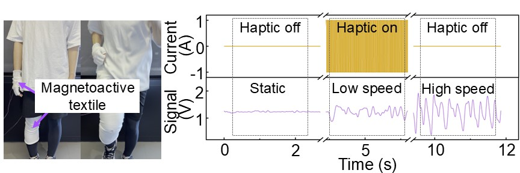

MagTex: Machine-Knitted Magnetoactive Textiles for Bidirectional Human–Machine Interface
Electrical & Computer Engineering, University of Washington — UIST ’25, Busan, Sept 28 – Oct 1, 2025
Abstract
Bidirectional HMIs provide both sensing and haptic feedback. We present MagTex, a bidirectional HMI platform realized via digitally machine-knitted magnetoactive textiles. MagTex embeds soft magnetoactive fibers into machine-knitted electromagnets, delivering localized vibrotactile feedback (galvanomagnetic effect) and motion sensing (electromagnetic induction). We describe the digital fabrication workflow, material characterization, circuit implementation, and system integration. A user study confirms perceptibility and safe thermal properties. We demonstrate a wireless smart sleeve for game control, a tactile Braille glove, and a closed-loop knee brace for real-time running feedback.

Wireless smart sleeve for gesture-based control.

Braille glove with six palm-mounted MagTex units.

Closed-loop knee-brace sensing with hand-glove feedback.
Video
@inproceedings{Zhang2025MagTex,
author = {Sen Zhang and Yuxuan Miao and Jazlin Taylor and Yiyue Luo},
title = {MagTex: Machine-Knitted Magnetoactive Textiles for Bidirectional Human--Machine Interface},
booktitle = {Proceedings of the 38th Annual ACM Symposium on User Interface Software and Technology (UIST '25)},
year = {2025},
address = {Busan, Republic of Korea},
month = {September 28--October 1},
publisher = {ACM},
doi = {10.1145/3746059.3747648}
}